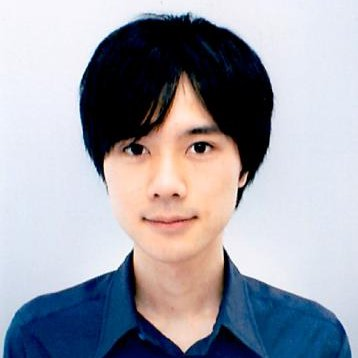

yuikita21@gmail.com
http://lab.rekimoto.org/members-2/yui-kita/
東京大学大学院学際情報学府学際情報学専攻総合分析情報学コース博士課程（暦本純一研究室）

専門分野
日常生活のためのコンピュータ，センシング，アクチュエーションテクノロジーのデザイン，実装．
ヒューマン・コンピュータ・インタラクション，ユーザインタフェース，Augmented Reality，Applied Computer Science． 2012年度独立行政法人情報処理推進機構未踏クリエータ（Programmable Foodの開発）． 2014年内閣府地域経済分析システムRESASプロジェクト参画（takram design engineeringインターン）．2014年リクルートホールディングス米国インターン優勝． 2015年CCHANNEL賞，TRUFFLE CAPITAL賞受賞．
学歴
2008年4月 青山学院大学 理工学部 情報テクノロジー学科 入学
2012年3月 青山学院大学 理工学部 情報テクノロジー学科 卒業
2012年4月 東京大学大学院 学際情報学府 総合分析情報学コース 修士課程 入学
2014年3月 東京大学大学院 学際情報学府 総合分析情報学コース 修士課程 卒業
2014年4月 東京大学大学院 学際情報学府 総合分析情報学コース 博士課程 入学
経歴
2010年6月-2013年3月 独立行政法人科学技術振興機構（JST）ERATO五十嵐デザインユーザインタフェースプロジェクト研究補助員
2012年8月-2013年2月 独立行政法人情報処理推進機構（IPA）未踏IT人材発掘・育成事業チーフクリエータ
2014年7月-2015年3月 takram design engineering インターン（デザイナー）
2015年9月- Sony CSL アシスタントリサーチャー
研究業績（査読あり国際学会）
1. Y.Kita and J.Rekimoto. Digitally Enhanced Utensils: Designing Time-sensitive Gustations.16th International Conference on Human-Computer Interaction 2014.
2. Y.Kita and J.Rekimoto. Thermal Visualization on Cooking. Proceedings of the 23rd International Conference on Artificial Reality and Telexistence (ICAT), Tokyo, Japan, 2013.
3. Y.Kita and J.Rekimoto. Spot-Light: Multimodal Projection Mapping on Food. 15th International Conference on Human-Computer Interaction 2013.
受賞
2012年 優秀論文賞（青山学院大学）
2014年 リクルートホールディングス米国インターン優勝
2015年 CCHANNEL賞
2015年 TRUFFLE CAPITAL賞
展示・招待講演
2011年 日本科学未来館 メディアラボ第9期展覧会 もんもとすむいえ 「家電を操作できるテーブル・CRISTAL」
2012年 東京大学制作展「画像検索する本・カピニット」（夏季），「ぼかしによる深度表現・ディープルック」（冬季）
2013年 未踏カンファレンス 「Programmable Food」（於株式会社LINE）
2014年 未踏カンファレンス 「Wet Materials」（於Microsoft）
2014年 Maker Fair Tokyo
2015年 第1期TECH LAB PAAK成果報告 「創造的レシピの自動生成技術・Chef's Hippocampus」
その他
TOEICスコア830, C, C++, C#, Ruby, Python, Processing, Arduino, Blender
2015 YuiKita